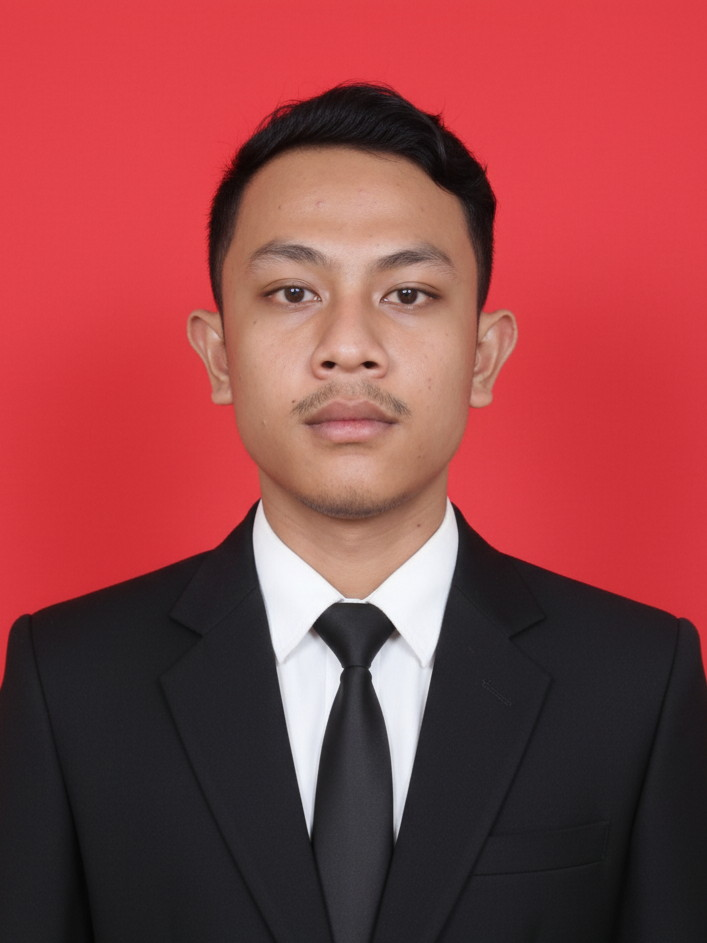

Web Developer & Tech Enthusiast
Hai, Saya Deristiana Purtiwan
Lulusan Teknik Informatika (IPK 3.90) dengan kompetensi utama di bidang web programming, dengan pengalaman praktis sebagai freelance full-stack developer (memiliki preferensi di front-end). Keahlian teknis ini berjalan seimbang dengan antusiasme mendalam terhadap hardware dan gadget, yang telah ditekuni sejak dini melalui eksplorasi perangkat lunak (flashing, custom ROM) dan kustomisasi sistem operasi (termasuk Linux & Hackintosh). Pengalaman ini dilengkapi oleh kemampuan teknisi, dengan fokus utama pada solusi perangkat lunak (instalasi, tweaking) dan kemampuan perbaikan perangkat keras dasar. Seorang pembelajar cepat yang adaptif, dan siap berkontribusi sambil terus belajar dan mengembangkan kemampuan di bidang teknologi.
Lihat Analisis & Tulisan Saya
